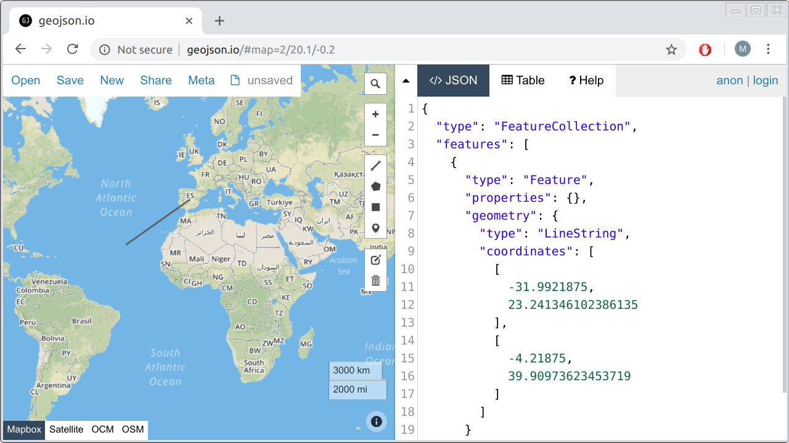
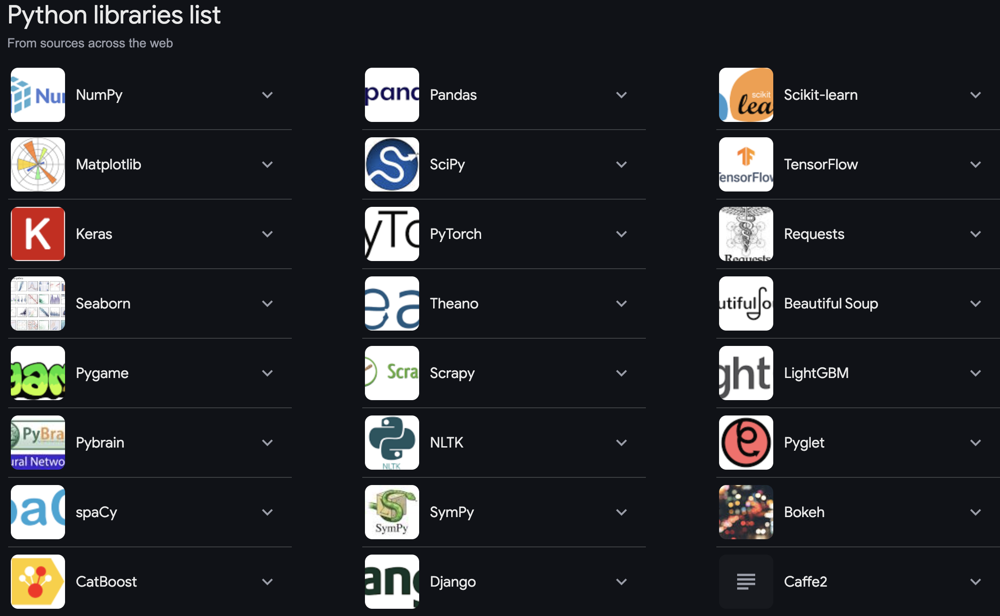

To avoid any confusion between NZ and US English, I will use:
[ ] as square brackets
( ) as round brackets
{ } as curly brackets
< > as angle(d) brackets
What will we cover this week?
How can we better understand the code structure to query complicated datasets?
How can we utilse Python Packages
How does programming open up new methods for spatial analysis that are not possible through manual processes
What will we “really” cover this week?
How do we learn dictionaries?
How to import spreadsheet data with pandas
How to clean and explore data
Data Visualisation (tutorial class)
Dictionaries
A dictionary is another type of variable
It is useful for storing loosely structured information
It uses a key:value structure
Denoted using curly brackets {}
Often combined with a list
Example
census = {"apple":"a delicious round fruit","bench":"a place to sit next to the footpath","candy":"something thats tastey but causes cavities","door":"a portal to another room","entomologist":"somone that studies bugs","farce":"a sausage meat mixture","gas":"a petrochemical nearing end of life","hatchback":"a car with a rear that enitrely opens","ice":"the solid state of water","juice":"a sugary taste fruit drink","k****":"asdfasdf", }GISCI_dictionary["bench"]
Dictionary functions
mydict.keys() gives you the ‘key’ of the key:value pairing
We can use a for loop to run through the keys in dictionary:
for i in GISCI_dictionary.keys():print(i)
Or we could use it as a way to format a printing of the entire dictionary
for i in GISCI_dictionary.keys(): # using the key we get from this line...print (i +":\n\t"+ GISCI_dictionary[i]) # ...to call the item/value from the dictionary as we loop through it
Dictionaries are often multi layered (multi-dimensional)
Dictionaries are really useful as they create a bit more freedom in our data strucutre.
In comparison, in array its a really bad idea to have mixed data types and uneven arrays, however dictionaries are great for this type of data.
This moves us towards ‘unstructured’ data. Lots of the info we get from the web is fairly unstrucutred becasue it relies on non-complete datasets.
For example: some data has geolocation, and some does not.
Having said that, using a dictionary doesn’t mean no structure, it just means that not all elements of the structure will be there.

Getting started with Pandas
Packages
Reading in files
Filtering columns and rows
Group by and Aggregation
Merging dataframes
Visulisation
Packages
In Python, you can do all sorts of thing beyond the basic python command
You can do so using packages
Do you recognise any of them?

Installation
Using conda: in your terminal, conda install pandas
Using pip or pip3: in your terminal, pip3 install pandas
However colab requires an exclamation mark in front of pip
!pip install pandas
Once installed you import libraries (or modules)
In Python, you must specify which library a function comes from, even after importing it.
To simplify this, assign a nickname (alias) when importing a library.
Commonly used nicknames:
pandas → pd
numPy → np
matplotlib.pyplot → plt
seaborn → sns
Using nicknames makes code more readable and efficient.
import pandas as pdimport numpy as npimport matplotlib as plt
Reading in Files
import pandas as pddf = pd.read_csv('file_name')df.to_csv(file_name, sep='\t', encoding='utf-8')df.to_excel("output.xlsx")
Import/Export different file types
.csv
.txt
.xlsx
.json
…
However in Colab
After you upload your files you can run these codes (refer to the Google Colab link)
# method 1
with open('/content/drive/My Drive/example.txt', 'r') as f:
text = f.read()
print(text)
# method 2
import pandas as pd
data = pd.read_csv('/content/drive/My Drive/my_data/data.csv')
print(data.head())
Methods are functions specific to an object’s type.
Example with a pandas DataFrame (pandas_df):
Compute the mean of each column:
pandas_df.mean()
Compute the sum of each column:
pandas_df.sum()
Methods are called using object.method() format.
libraries can be confusing
Does this work?
py_list = [1, 3, 4]py_list.mean()
If not, why doesn’t it work?
Can you come up with a solution?
Indexing DataFrames
Extracting columns
While you can create a pandas DataFrame using a dictionary containing list entries (as we did earlier), the columns of a DataFrame themselves, when extracted, are a “Series” type object (rather than a list).
pandas_df['a'] # the column 'a' can be extracted using []pandas_df.a # df.col dot syntax
The output above is the same as from the pandas_df[‘a’] syntax: both outputs are a pandas Series object.
Adding columns to a DataFrame
You can define a new DataFrame using an existing data frame and then modify it, e.g., by adding a new column:
# define a new data frame using the original onepandas_df_new = pandas_df# add a new column to the new data framepandas_df_new['d'] = [13,14,15,16]# print out the new data framepandas_df_new
Notice that the original DataFrame will also change:
pandas_df
a b c d
0 1 5 9 13
1 2 6 10 14
2 3 7 11 15
3 4 8 12 16
Don’t forget to .copy()
Assignment in Python Creates a Reference, Not a Copy
When you assign one variable to another, like this:
pandas_df_new = pandas_df
You are not creating a new DataFrame.
Instead, pandas_df_new becomes another name (or pointer) for the same underlying object (pandas_df).
Any changes made to pandas_df_new will also modifypandas_df because they both reference the same data in memory.
2. Example of the Problem
import pandas as pdpandas_df = pd.DataFrame({'A': [1, 2, 3], 'B': [4, 5, 6]})pandas_df_new = pandas_dfpandas_df_new['A'] = [10, 20, 30]print(pandas_df) # The original DataFrame is also modified!
Output:
A B
0 10 4
1 20 5
2 30 6
Notice that pandas_df changed even though we only modified pandas_df_new.
This happens because pandas_df_new is just another reference to the same object.
3. Solution: Use .copy() to Create a True Copy
pandas_df_new = pandas_df.copy()
Now, pandas_df_new is a completely separate DataFrame.
Changes made to pandas_df_newwon’t affect pandas_df.
4. Example with .copy()
import pandas as pd# Create a DataFramepandas_df = pd.DataFrame({'A': [1, 2, 3], 'B': [4, 5, 6]})# Create a true copypandas_df_new = pandas_df.copy()# Modify the new DataFramepandas_df_new['A'] = [10, 20, 30]print("Original DataFrame:\n", pandas_df)print("\nNew DataFrame:\n", pandas_df_new)
Output:
Original DataFrame:
A B
0 1 4
1 2 5
2 3 6
New DataFrame:
A B
0 10 4
1 20 5
2 30 6
Now, pandas_df remains unchanged, because pandas_df_new is an independent copy.
Your turn
recreate a dataframe using the code below
copy the dataframe and assign the new dataframe as pandas_df_new
add a new column called ‘c’, with a list of [9,10,11,12]
print the result for both pandas_df and pandas_df_new
Pandas Series objects: you can ask logical questions of them (side-note: this does not work with python lists, but it does with with pandas Series objects):
# ask which entries in the column "a" are greater than 1pandas_df['a'] >1
0 False
1 True
2 True
3 True
Name: a, dtype: bool
The Logic of location loc
employ the .loc method and
provide : to the column dimension (which says to “return all of the columns”), then we get the expected result:
pandas_df.loc[pandas_df.a >1,:]
a b
1 2 6
2 3 7
3 4 8
Note that loc isn’t a normal function per se in that it is not followed by round brackets (), but it is followed by the square brackets [].
If we wanted to just return the second column, we would provide the second column’s name (‘b’) into the second dimension of the .loc[,] square brackets
pandas_df.loc[pandas_df.a >1,'b']
1 6
2 7
3 8
Name: b, dtype: int64
iloc
However, loc expects either a Boolean series or a name in its index. The iloc method, on the other hand, takes integer index positions. The following code will extract the second, third, and fourth rows of the second column (remember zero-indexing!).
pandas_df.iloc[[1,2,3],1]
1 6
2 7
3 8
Name: b, dtype: int64
It’s a bit annoying that you can’t use the same syntax to do both named (.loc) and integer (.iloc) indexing for pandas DataFrames.
The query() method
Since this type of square bracket syntax for indexing feels clunky in Python, you can alternatively use the query() method of a pandas DataFrame similar to the filter() function in the polar package
For pandas DataFrame, the query() syntax looks like
pandas_df.query('a > 1')
a b
1 2 6
2 3 7
3 4 8
If you want to use an external variable, you need to access it using @ within the query argument:
thresh =1pandas_df.query('a > @thresh')
Your Turn
Create a dictionary with New Zealand city names as keys and their populations as values.
In python there are many different libraries for doing data visualization. The two you are most likely to have heard of include matplotlib and seaborn.
Seaborn is a little prettier than matplotlib, but all I’m going to show in this tutorial is the inbuilt data visualisation methods for pandas Series and DataFrame objects that are built on matplotlib.
Example: Gapminder
To do some more interesting vis, let’s load the gapminder dataset (from a URL) into a pandas DataFrame using the pd.read_csv() pandas function. This pd.read_csv() function can also be used to load a local .csv file.
What will happen if we apply the plot() method to this Series object?
gdp_by_continent.plot()
Bar plot
By default a line plot is created and the row index is used as the x-axis labels by default. The DataFrame’s plot() method here acts as a wrapper for the matplotlib library’s plotting function.
If I wanted a bar chart instead of a line plot, I could create one using the plot.bar() method (instead of just the plot() method):
gdp_by_continent.plot.bar()
Merge df’s
Concatenate DataFrames along row and column.
Merge DataFrames on specific keys by different join logics like left join, inner join, etc.
Join DataFrames by index.
We have two dataframes
# Creating the first DataFramedf1 = pd.DataFrame({'ID': [1, 2, 3, 4],'Name': ['Tom', 'Nick', 'Krish', 'Jack'],'Age': [20, 21, 19, 18]})# Creating the second DataFramedf2 = pd.DataFrame({'ID': [3, 4, 5, 6],'Subject': ['Maths', 'English', 'Science', 'History'],'Score': [88, 75, 90, 85]})print("DataFrame 1:")print(df1)print("\nDataFrame 2:")print(df2)
Inner Merge
An inner merge combines DataFrames based on the intersection of their keys.
To navigate complex datasets effectively, it’s crucial to structure your code in a way that enhances readability and maintainability
Python offers a rich ecosystem of libraries specifically designed for GIS and spatial analysis. We explored some key packages such as GeoPandas for spatial data frames
The actual programming:
Pandas: Indexing, Filtering, Grouping, Join between dataframes
![]()